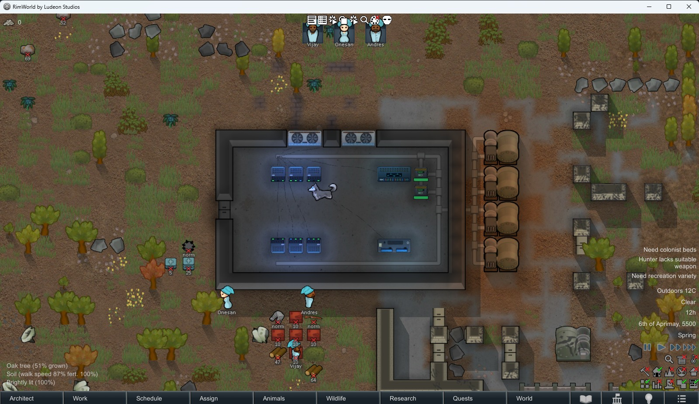
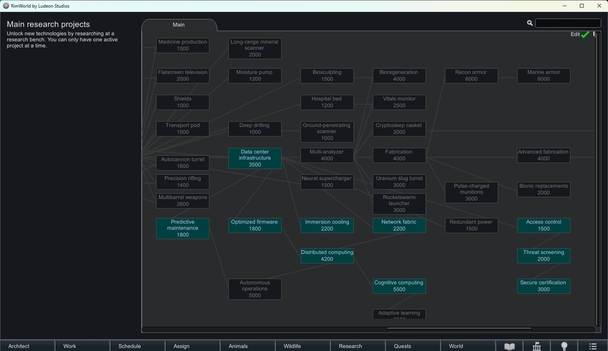
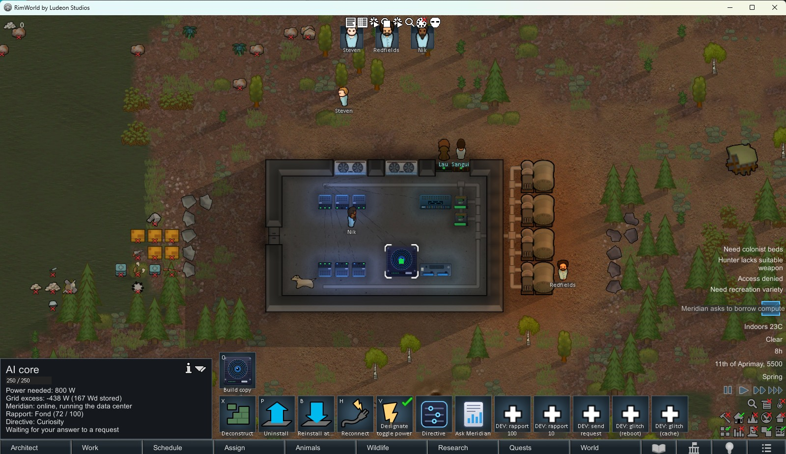
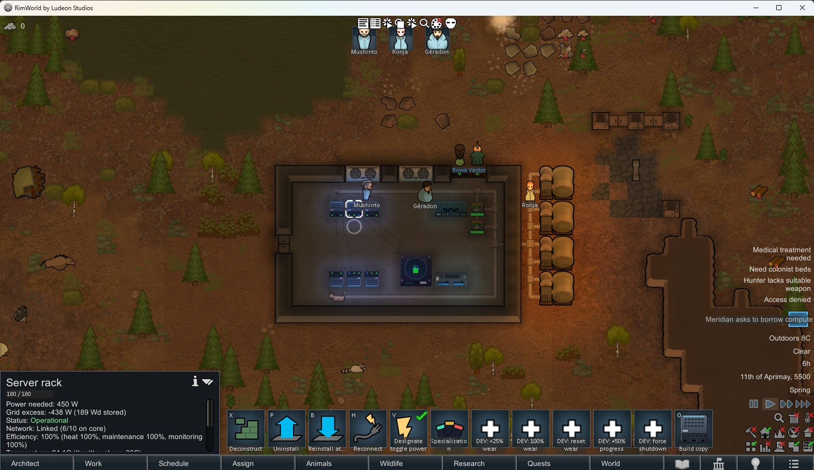

Research Data Center Infrastructure, then construct racks of servers that compile valuable Data Cartridges for traders. A real midgame investment: power, cooling, skilled colonists, and a pile of components — and it rewards you when you run it well.

Every system below is built entirely from vanilla mechanics — no Harmony, no other dependencies — and every balance number lives in an XML file you can tune.
Racks produce Data Cartridges while powered, network-linked and cool. Status is always clear: Operational, No Power, No Network, Too Hot, Maintenance Required or Output Full.
Ten follow-up research projects: faster output, less heat, slower wear, bigger network cores, a stronger research uplink, autonomous racks, and the two security doors.
A biometric access door and a metal detector gate keep out visitors and armed guests. Certify both and cartridges sell for 20% more.
An on-site intelligence with a personality that runs your data center, forecasts maintenance, and sends small requests. No network access, no language model, nothing hostile.
Switch any rack between standard, research, financial or medical cartridges — each with its own trade-off, once Data Classification is researched.
An occasional small raid built entirely from the game's own raid system. Raiders try to loot cartridges and flee rather than fight to the end.
A buyer occasionally offers a timed bulk order for a silver bonus. Accept, decline, or let it lapse — nothing is ever taken from you for saying no.
A four-rack starter, the upgrade research tree, the AI core, and the specialization command.


